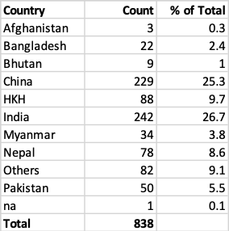
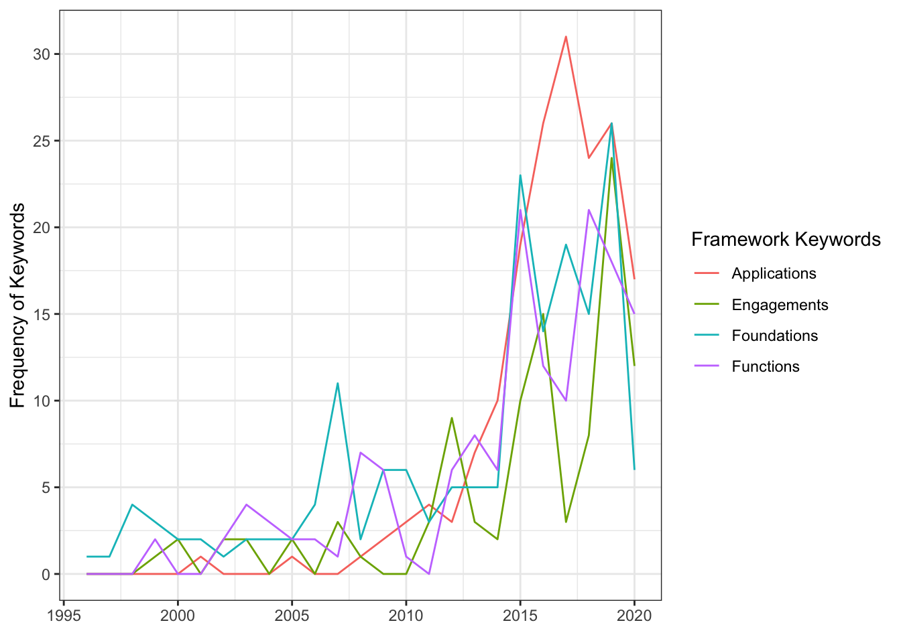

Synthesis Analysis - HKH
Last updated: 2020-06-05
Checks: 6 1
Knit directory: mom-ag_services/
This reproducible R Markdown analysis was created with workflowr (version 1.6.2). The Checks tab describes the reproducibility checks that were applied when the results were created. The Past versions tab lists the development history.
The R Markdown file has unstaged changes. To know which version of the R Markdown file created these results, you’ll want to first commit it to the Git repo. If you’re still working on the analysis, you can ignore this warning. When you’re finished, you can run wflow_publish to commit the R Markdown file and build the HTML.
Great job! The global environment was empty. Objects defined in the global environment can affect the analysis in your R Markdown file in unknown ways. For reproduciblity it’s best to always run the code in an empty environment.
The command set.seed(20200519) was run prior to running the code in the R Markdown file. Setting a seed ensures that any results that rely on randomness, e.g. subsampling or permutations, are reproducible.
Great job! Recording the operating system, R version, and package versions is critical for reproducibility.
Nice! There were no cached chunks for this analysis, so you can be confident that you successfully produced the results during this run.
Great job! Using relative paths to the files within your workflowr project makes it easier to run your code on other machines.
Great! You are using Git for version control. Tracking code development and connecting the code version to the results is critical for reproducibility.
The results in this page were generated with repository version 677718e. See the Past versions tab to see a history of the changes made to the R Markdown and HTML files.
Note that you need to be careful to ensure that all relevant files for the analysis have been committed to Git prior to generating the results (you can use wflow_publish or wflow_git_commit). workflowr only checks the R Markdown file, but you know if there are other scripts or data files that it depends on. Below is the status of the Git repository when the results were generated:
Ignored files:
Ignored: .RData
Ignored: .Rhistory
Ignored: .Rproj.user/
Ignored: analysis/.Rhistory
Ignored: code/.Rhistory
Untracked files:
Untracked: output/institution_countries.csv
Untracked: output/~$excel-organize_final.xlsx
Untracked: output/~$rd-organize-final.docx
Unstaged changes:
Modified: analysis/synthesis_HKH.Rmd
Modified: code/syn_5-institute.R
Modified: output/hkh-institution_unedited.csv
Deleted: output/institution_country.csv
Note that any generated files, e.g. HTML, png, CSS, etc., are not included in this status report because it is ok for generated content to have uncommitted changes.
These are the previous versions of the repository in which changes were made to the R Markdown (analysis/synthesis_HKH.Rmd) and HTML (docs/synthesis_HKH.html) files. If you’ve configured a remote Git repository (see ?wflow_git_remote), click on the hyperlinks in the table below to view the files as they were in that past version.
| File | Version | Author | Date | Message |
|---|---|---|---|---|
| Rmd | 2a263de | KaranSShakya | 2020-06-05 | year + country + groupped with FINAL dataset |
| html | 2a263de | KaranSShakya | 2020-06-05 | year + country + groupped with FINAL dataset |
| Rmd | 9f5aaae | KaranSShakya | 2020-06-04 | sankey test diagram |
| html | 9f5aaae | KaranSShakya | 2020-06-04 | sankey test diagram |
| Rmd | 661b68c | KaranSShakya | 2020-06-04 | country table |
| html | 661b68c | KaranSShakya | 2020-06-04 | country table |
| Rmd | 8822f7b | KaranSShakya | 2020-06-04 | institution collaboration - final |
| html | 8822f7b | KaranSShakya | 2020-06-04 | institution collaboration - final |
| Rmd | e2d16a0 | KaranSShakya | 2020-06-03 | minor corrections to line graph |
| html | e2d16a0 | KaranSShakya | 2020-06-03 | minor corrections to line graph |
| Rmd | 3f0a602 | KaranSShakya | 2020-06-03 | line graph final |
| html | 3f0a602 | KaranSShakya | 2020-06-03 | line graph final |
| Rmd | 697fd52 | KaranSShakya | 2020-06-02 | table picture of 5 years |
| html | 697fd52 | KaranSShakya | 2020-06-02 | table picture of 5 years |
| Rmd | 4872157 | KaranSShakya | 2020-06-02 | fixed: combined keywords |
| html | 4872157 | KaranSShakya | 2020-06-02 | fixed: combined keywords |
| Rmd | d8b15ce | KaranSShakya | 2020-06-01 | hkh - table all |
| html | d8b15ce | KaranSShakya | 2020-06-01 | hkh - table all |
| Rmd | 9a12b5a | KaranSShakya | 2020-05-31 | Synthesis analysis - task 2 complete |
| html | 9a12b5a | KaranSShakya | 2020-05-31 | Synthesis analysis - task 2 complete |
| html | 37e8002 | KaranSShakya | 2020-05-30 | part 1 complete |
| Rmd | 5cf0632 | KaranSShakya | 2020-05-30 | word cloud fix |
| html | 5cf0632 | KaranSShakya | 2020-05-30 | word cloud fix |
| Rmd | eca107f | KaranSShakya | 2020-05-30 | wordcloud project |
| html | eca107f | KaranSShakya | 2020-05-30 | wordcloud project |
| Rmd | 53ac1ae | KaranSShakya | 2020-05-30 | first part submission - HKH |
| html | 53ac1ae | KaranSShakya | 2020-05-30 | first part submission - HKH |
| Rmd | 0f3b10f | KaranSShakya | 2020-05-30 | Creating new synthesis page |
| html | 0f3b10f | KaranSShakya | 2020-05-30 | Creating new synthesis page |
Summary Statistics
1. Summary Statistics by Year

2. Summary Statistics by Country

Trends over Time - Groupped Keywords
This is the crude results for the keywords that you groupped.
| Version | Author | Date |
|---|---|---|
| 2a263de | KaranSShakya | 2020-06-05 |
This is an area chart. Which shows how each attribute contributes to the total over time. 
Recommendations:
I would remove 1995 and 2020. 2020 is not complete, and showing the figures for 2020 does not help.
The sudden increase in 2015 is simply due to the fact that there are soo many more papers in 2015.
I would also revise on the keywords. The 5 categories make sense, but the keywords you have selected for each category can be improved upon. For example, keywords like “crop production” is really generic, and can be a keyword in a paper that is entirely about climate change. To see a better trend, and a better graph, I woudl revise the keywords so that each keyword is specific to its category. Another example is “sustainability”. This is another generic keyword that can be applicable to not only engagement. The keywords for drivers are good.
Let me know if there are any edits to this graph you would like to see. Visually or graphically.
Institution Collaboration
Methodology:
Example, in the Affiliation excel column author’s information are given as follows: Kaldhara, Kathmandu, Nepal ; 12 Road, Assam, India
I seperated each values by ; then I select the last string character which resulted in Nepal, India. This is how I made the graphs.
The accuracy of this table is dependent on how well Scopus formats their data, and since I am only looking at countries, performing intra-country analysis is impossible. So to compensate for this omission I added two more variables: Only HKH Country to Only international countries.
So far, apart from 3 columns, I had a good result meaning SCOPUS organizes their data well.

What we can see:
There is a lot more HKH-international collaboration than HKH-HKH collaboration.
Sole HKH countries produced the most papers in all our time intervals.
HKH with HKH had the lowest collaboration in all our time intervals.
Important HKH and International Country can also mean there are multiple HKH countries involved with writing the paper. (Nepal + India + USA) would count as HKH and International rather than Two or more HKH countries.
Here is the table that summarizes the country that each country came from:
Sankey Diagram (TEST)
I have never built a Sankey Diagram so this will still be a work in progress. Here is where I am now:
$endpoints
$endpoints[[1]]
[,1] [,2]
[1,] 0.000000000 0.004572804
[2,] 0.010288809 0.016004813
[3,] 0.004572804 0.010288809
[4,] 0.016004813 0.018291215
[5,] 0.030791215 0.046796029
[6,] 0.059371239 0.086808063
[7,] 0.046796029 0.059371239
[8,] 0.086808063 0.089094465
[9,] 0.101594465 0.138176895
[10,] 0.155324910 0.212484958
[11,] 0.138176895 0.155324910
[12,] 0.212484958 0.213628159
[13,] 0.226128159 0.306152226
[14,] 0.338161853 0.457054753
[15,] 0.306152226 0.338161853
[16,] 0.457054753 0.458197954
[17,] 0.470697954 0.647894103
[18,] 0.700481348 0.988567990
[19,] 0.647894103 0.700481348
[20,] 0.988567990 1.000000000
$endpoints[[2]]
[,1] [,2]
[1,] 0.000000000 0.004572804
[2,] 0.467749699 0.473465704
[3,] 0.331046931 0.336762936
[4,] 0.981708785 0.983995187
[5,] 0.004572804 0.020577617
[6,] 0.473465704 0.500902527
[7,] 0.336762936 0.349338147
[8,] 0.983995187 0.986281588
[9,] 0.020577617 0.057160048
[10,] 0.500902527 0.558062575
[11,] 0.349338147 0.366486161
[12,] 0.986281588 0.987424789
[13,] 0.057160048 0.137184116
[14,] 0.558062575 0.676955475
[15,] 0.366486161 0.398495788
[16,] 0.987424789 0.988567990
[17,] 0.137184116 0.314380265
[18,] 0.676955475 0.965042118
[19,] 0.398495788 0.451083032
[20,] 0.988567990 1.000000000
sessionInfo()R version 4.0.0 (2020-04-24)
Platform: x86_64-apple-darwin17.0 (64-bit)
Running under: macOS Catalina 10.15.4
Matrix products: default
BLAS: /Library/Frameworks/R.framework/Versions/4.0/Resources/lib/libRblas.dylib
LAPACK: /Library/Frameworks/R.framework/Versions/4.0/Resources/lib/libRlapack.dylib
locale:
[1] en_US.UTF-8/en_US.UTF-8/en_US.UTF-8/C/en_US.UTF-8/en_US.UTF-8
attached base packages:
[1] stats graphics grDevices utils datasets methods base
other attached packages:
[1] alluvial_0.1-2 ggalluvial_0.11.3 gt_0.2.1 SnowballC_0.7.0
[5] wordcloud_2.6 RColorBrewer_1.1-2 tm_0.7-7 NLP_0.2-0
[9] readxl_1.3.1 forcats_0.5.0 stringr_1.4.0 dplyr_0.8.5
[13] purrr_0.3.4 readr_1.3.1 tidyr_1.0.3 tibble_3.0.1
[17] ggplot2_3.3.0 tidyverse_1.3.0 workflowr_1.6.2
loaded via a namespace (and not attached):
[1] Rcpp_1.0.4.6 lubridate_1.7.8 lattice_0.20-41 assertthat_0.2.1
[5] rprojroot_1.3-2 digest_0.6.25 slam_0.1-47 R6_2.4.1
[9] cellranger_1.1.0 backports_1.1.6 reprex_0.3.0 evaluate_0.14
[13] httr_1.4.1 pillar_1.4.4 rlang_0.4.6 rstudioapi_0.11
[17] whisker_0.4 rmarkdown_2.1 labeling_0.3 munsell_0.5.0
[21] broom_0.5.6 compiler_4.0.0 httpuv_1.5.2 modelr_0.1.7
[25] xfun_0.13 pkgconfig_2.0.3 htmltools_0.4.0 tidyselect_1.1.0
[29] fansi_0.4.1 crayon_1.3.4 dbplyr_1.4.3 withr_2.2.0
[33] later_1.0.0 grid_4.0.0 nlme_3.1-147 jsonlite_1.6.1
[37] gtable_0.3.0 lifecycle_0.2.0 DBI_1.1.0 git2r_0.27.1
[41] magrittr_1.5 scales_1.1.1 cli_2.0.2 stringi_1.4.6
[45] farver_2.0.3 fs_1.4.1 promises_1.1.0 xml2_1.3.2
[49] ellipsis_0.3.0 generics_0.0.2 vctrs_0.3.0 tools_4.0.0
[53] glue_1.4.1 hms_0.5.3 parallel_4.0.0 yaml_2.2.1
[57] colorspace_1.4-1 rvest_0.3.5 knitr_1.28 haven_2.2.0